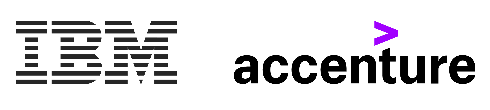

Because evolution is unitary.
Unitary Fund Announces New Support through New Membership Program
UF Team
Since 2018, Unitary Fund has supported the open quantum technology ecosystem around the world. We’ve awarded more than 50 microgrants to projects from more than 20 countries, developed the leading error-mitigating quantum compiler, run hackathons, and supported open source community building.
Today, Unitary Fund is proud to announce our new corporate member program. We thank these organizations for their support and look forward to their further contributions in the coming year.
The corporate member program contributes to Unitary Fund’s work on a recurring, annual basis, and consists of two tiers: Core members and Supporting members. Core members are a part of the Unitary Fund’s Strategic Board which reviews strategy, budget, impact, and recommendation’s quarterly.
“The backing from these important members of the quantum ecosystem emphasizes the importance of our programs and the shared goals we all have in realizing the potential of quantum technology,” said Will Zeng, President of Unitary Fund. “There’s lots more work to do and we welcome new support!”
Unitary Fund Core Members: IBM and Accenture

“Our support of Unitary Fund is an important part of IBM’s effort to develop an open ecosystem around our Qiskit software, community and quantum computing platform” said Liz Durst, Director, IBM Quantum & Qiskit Community.
“Helping talented individuals with the opportunity to advance their innovative ideas is a core part to growing the quantum ecosystem. We are especially excited to enable underrepresented entrepreneurs through the Unitary Fund as part of our Corporate Citizenship efforts,” said Carl Dukatz, Accenture Quantum Program Lead. “Additionally, Accenture has a long history of contributing to open-source and is glad to work with the Unitary Fund to create the important foundations for quantum.”
The Unitary Fund awards $4,000 grants to individuals and teams pursuing projects that leverage quantum technologies to benefit humanity. The program is unique in its inclusivity (no credentials are required to apply) and low friction (awards are no-strings-attached).
Unitary Fund Supporting Members: Xanadu, IonQ, BCG, Pasqal, IQM, and DoraHacks

“It was important for Pasqal to reaffirm its support to open-source initiatives in quantum software by becoming a sponsor of Unitary Fund” says Loïc Henriet, Chief Technology Officer of Pasqal, a French startup building quantum processors out of neutral atoms. “We are thrilled to join the efforts led by Unitary Fund to build a solid ecosystem in this field.”
“We are delighted to support the Unitary Fund’s mission. They are doing first-class work building out a quantum ecosystem for everyone. You can see the Unitary Fund’s impact everywhere you look,” said Nathan Killoran, Head of Software, Algorithms, & Quantum Machine Learning at Xanadu, a photonic quantum computer company in Canada.
To learn more about our new member program, email info@unitary.fund.
About Unitary Fund
Unitary Fund is a 501(c)(3) non-profit whose mission is to create a quantum technology ecosystem that benefits the people around the world. We believe that expanding the pool of people working on quantum technologies is a way to ensure that the benefits of these tools are widely, swiftly, and equitably distributed. We primarily use two major programs to pursue this mission.Through Unitary Labs we work on in-house projects that help the ecosystem as a whole. Through our microgrant program, we fund an inclusive community of explorers across the world to work on quantum technologies.
Stay up to date with what Unitary Fund is working on by following us on Twitter, GitHub, and LinkedIn!